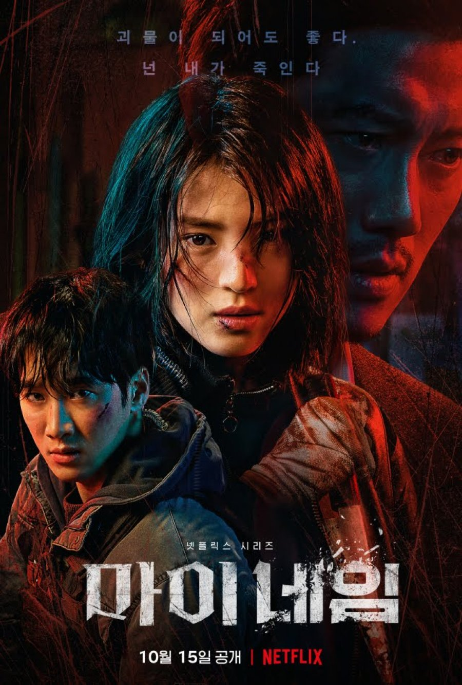

Merhaba adım Ceyda. Kütahyada yaşıyorum. Temelde Django ile web geliştirmek istediğim için bu patikaya katıldım.
Kitap okumayı, resim çizmeyi ve film izlemeyi severim. Ayrıca boş vakitlerimde okçuluk eğitimi alıyorum.
My Name
My Name ,Kim Jin-min tarafından yönetilen ve Han So-hee ,Park Hee-soon ve Ahn Bo-hyun 'un başrol oynadığı Güney Koreli bir televizyon dizisidir.